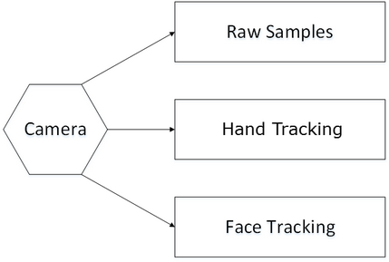

The PXC[M]SenseManager interface is the main interface to any predefined use cases:
| 1. | There is one or more algorithm modules. |
| 2. | There is a single camera input device. |
 It is possible to create multiple instances of the PXC[M]SenseManager interface to work with different cameras.
It is possible to create multiple instances of the PXC[M]SenseManager interface to work with different cameras.
| 3. | The camera serves input data to the algorithm modules. |
Figure 10 shows an example. The application configures the PXC[M]SenseManager interface to read raw camera samples, and work on finger tracking and face tracking.

Figure 10: PXC[M]SenseManager Supported Use Cases
Conceptually, the application can treat each channel of camera sample capture and algorithm processing as running independently and concurrently. Each channel is given a module identifier to identify the captured image sample(s) and the algorithm output.
| o | The first image channel configured to capture uses the module identifier PXC[M]Capture.CUID, the second PXC[M]Capture.CUID+1, and so on. |
| o | The algorithm module identifier uses their interface identifiers, such as PXC[M]HandModule.CUID or PXC[M]FaceModule.CUID. |
The typical programming flow of the PXC[M]SenseManager interface includes the following steps:
| • | Create Instance: |
Use the CreateSenseManager function to obtain an instance of the PXC[M]SenseManager interface.
 As the PXC[M]SenseManager interface is the dominant interface that covers most use cases, the SDK creates a convenient function CreateInstance that shortcuts the PXC[M]Session creation. You can use the CreateInstance function to quickly get to the PXC[M]SenseManager interface functions.
As the PXC[M]SenseManager interface is the dominant interface that covers most use cases, the SDK creates a convenient function CreateInstance that shortcuts the PXC[M]Session creation. You can use the CreateInstance function to quickly get to the PXC[M]SenseManager interface functions.
C++ Example 17: Create a PXCSenseManager Instance
PXCSenseManager *sm=PXCSenseManager::CreateInstance(); |
C# Example 17: Create a PXCMSenseManager Instance
PXCMSenseManager sm=PXCMSenseManager.CreateInstance(); |
Java Example 17: Create a PXCMSenseManager Instance
PXCMSenseManager sm=PXCMSenseManager.CreateInstance(); |
| • | Configure the components: |
Use the set of EnableXXX functions to enable raw sample capture or different algorithm modules.
C++ Example 18: Configure A Color Image Capture
sm->EnableStream(PXCCapture::STREAM_TYPE_COLOR,0,0); |
C# Example 18: Configure A Color Image Capture
sm.EnableStream(PXCMCapture.StreamType.STREAM_TYPE_COLOR,0,0); |
Java Example 18: Configure A Color Image Capture
sm.EnableStream(PXCMCapture.StreamType.STREAM_TYPE_COLOR,0,0); |
| • | Control the execution flow and retrieve results: |
Depending on the application threading model, you can choose to use a message loop or use event callbacks. Either way, the PXC[M]SenseManager delivers the data (the captured image sample, or the module output) when they are ready.
Example 19 shows the relevant code side by side. On the left, the application uses the AcquireFrame function to wait for the frame data to be ready, the QuerySample function to retrieve the image sample, and then the ReleaseFrame function to resume processing the next frame. On the right, the application listens to the image ready event in the OnNewSample function.
During the execution, the application can pause/resume certain algorithm modules. It improves performance and saves power if you are not interested in the results of these modules.
C++ Example 19: Control Flow and Retrieve Results
sm->Init();
for (;;) { pxcStatus sts=sm->AcquireFrame(true); if (sts<PXC_STATUS_NO_ERROR) break;
PXCCapture::Sample *sample; sample=sm->QuerySample();
.... // process image
sm->ReleaseFrame(); }
sm->Close();
|
class MyHandler: public PXCSenseManager::Handler { public: virtual pxcStatus PXCAPI OnNewSample( pxcUID, PXCCapture::Sample *sample) { // return NO ERROR to continue, or // any ERROR to exit the loop return PXC_STATUS_NO_ERROR; } };
void MainRoutine(void) { ... // Initialize my event handler MyHandler handler;
// Stream depth samples sm->Init(&handler); sm->StreamFrames(true); sm->Close(); ... } |
C# Example 19: Control Flow and Retrieve Results
sm.Init();
for (;;) { pxcmStatus sts=sm.AcquireFrame(true); if (sts<pxcmStatus.PXCM_STATUS_NO_ERROR) break;
PXCMCapture.Sample sample; sample=sm.QuerySample();
.... // process image
sm.ReleaseFrame(); }
sm.Close();
|
pxcmStatus OnNewSample(int mid, PXCMCapture.Sample sample) { // return NO ERROR to continue, // or any ERROR to exit the loop return pxcmStatus.PXCM_STATUS_NO_ERROR; }
void MainRoutine(PXCMSession session) { ... // Initialize my event handler PXCMSenseManager::Handler handler= new PXCMSenseManager.Handler(); handler.onNewSample=OnNewSample;
// Stream depth samples sm.Init(handler); sm.StreamFrames(true); sm.Close(); ... } |
Java Example 19: Control Flow and Retrieve Results
sm.Init();
for (;;) { pxcmStatus sts=sm.AcquireFrame(true); if (sts<pxcmStatus.PXCM_STATUS_NO_ERROR) break;
PXCMCapture.Sample sample; sample=sm.QuerySample();
.... // process image
sm.ReleaseFrame(); } sm.Close();
|
class MyHandler implements PXCMSenseManager.Handler { public pxcmStatus OnNewSample(int mid, PXCMCapture.Sample sample) { // return NO ERROR to continue, or // any ERROR to exit the loop return pxcmStatus.PXCM_STATUS_NO_ERROR; } };
void MainRoutine(void) { ... // Initialize my event handler MyHandler handler=new MyHandler();
// Stream depth samples sm.Init(handler); sm.StreamFrames(true); sm.Close(); ... } |
| • | Release the instance |
The complete example is as illustrated in Example 20:
C++ Example 20: Configure and Stream a Color Stream
PXCSenseManager *sm=PXCSenseManager::CreateInstance();
sm->EnableStream(PXCCapture::STREAM_TYPE_COLOR,0,0); sm->Init();
while (sm->AcquireFrame(true)>=PXC_STATUS_NO_ERROR) { PXCCapture::Sample *sample=sm->QuerySample(); .... // process image sm->ReleaseFrame(); }
sm->Release(); |
C# Example 20: Configure and Stream a Color Stream
PXCMSenseManager sm=PXCMSenseManager.CreateInstance();
sm.EnableStream(PXCMCapture.StreamType.STREAM_TYPE_COLOR,0,0,0); sm.Init();
while (sm.AcquireFrame(true)>=pxcmStatus.PXCM_STATUS_NO_ERROR) { PXCMCapture.Sample sample=sm.QuerySample(); .... // process image sm.ReleaseFrame(); }
sm.Dispose(); |
Java Example 20: Configure and Stream a Color Stream
PXCMSenseManager sm=PXCMSenseManager.CreateInstance();
sm.EnableStream(PXCMCapture.StreamType.STREAM_TYPE_COLOR,0,0,0); sm.Init();
while (sm.AcquireFrame(true)>=pxcmStatus.PXCM_STATUS_NO_ERROR) { PXCMCapture.Sample sample=sm.QuerySample(); .... // process image sm.ReleaseFrame(); }
sm.close(); |